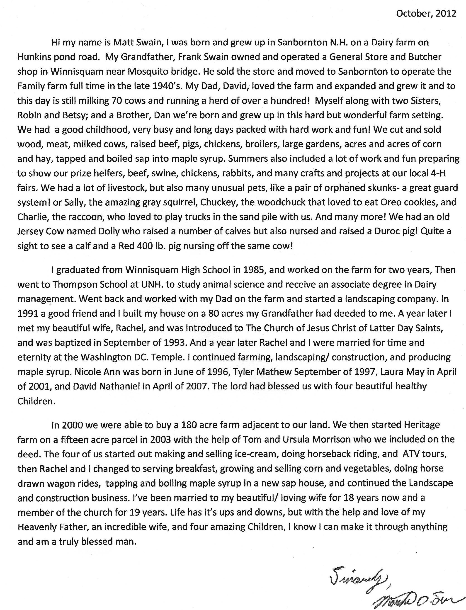

Who We Are
October, 2012
Hi my name is Matt Swain, I was born and grew up in Sanbornton N.H. on a Dairy farm on Hunkins Pond Road. My Grandfather, Frank Swain owned and operated a General Store and Butcher shop in Winnisquam near Mosquito bridge. He sold the store and moved to Sanborton to operate the Family farm full time in the late 1940's. My Dad, David, loved the farm and expanded and grew it and to this day is still milking 70 cows and running a herd of over a hundred! Myself along with two Sister, Robin and Betsy; and a Brother, Dan were born and grew up in this hard but wonderful farm setting. We had a good childhood, very busy nad long packed with hard work and fun! We cut and sold wood, meat, milked cows, raised beef, pigs, chickens, broilers, large gardens, acres and acres of corn and hay, tapped and boiled sap into maple syrup. Summers also included a lot of work and fun preparing to show your prize heifers, beef, swine, chickens, rabbits, and many crafts and projects at our local 4-h fairs. We had alot of livestock, but also many unusual pets, like a pair of orphaned skunks- a great guard system! or Sally, the amazing gray squirrel, Chuckey, the woodchuck that loved to eat Oreo cookies, and Charlie, the raccoon, who loved to play trucks in the sand pile with us. Any many more! We had an old Jersey Cow named Dolly who raised a number of calves but also nursed and raised a Durloc pig! Quite a sight to see a calf and a Red 400lb pig nursing off the same cow!
I graduated from Winnisquam High School in 1985, and worked on the farm for two years, Then went to Thompson School at UNH. To study animal science and receive an associate degree in Dairy management. Went back and worked with my Dad on the farm and started a landscaping company. In 1991 a good friend and I built my house on a 80 acres my Grandfather had deeded to me. A year later I met my beautiful wife, Rachel, and was introduced to the Church of Jesus Christ and Latter Day Saints, and was baptized in September 1993. And a year later Rachel and I were married for time and eternity at Washington DC. Temple. I continued farming, landscaping/construction, and producing maple syrup. Nicole Ann was born in June of 1996, Tyler Mathew September 1997, Laura May in April of 2001, and David Nathaniel in April of 2007. The Lord has blessed us with four beautiful healthy children.
In 2000 we were able to buy a 180 acre farm adjacent to our land. We then started Heritage Farm on a fifteen acre parcel in 2003 with the help of Tom Ursula Morrison who we included on the deed. The four of us started out making and selling ice-cream, doing horseback riding, and ATV tours, then Rachel and I changed to serving breakfast, growing and selling corn and vegetables, doing horse drawn wagon rides, rapping, and boiling maple syrup in a new sap house, and continued the landscape and construction business. I've been married to my beautiful/loving wife of 18 years now and a member of the churchfor 19 years. Life has it's ups and downs, but with the help and love of my Heavenly Father, and incredible wife, and four amazing children, I know i can make it through anything and am a truly blessed man.
